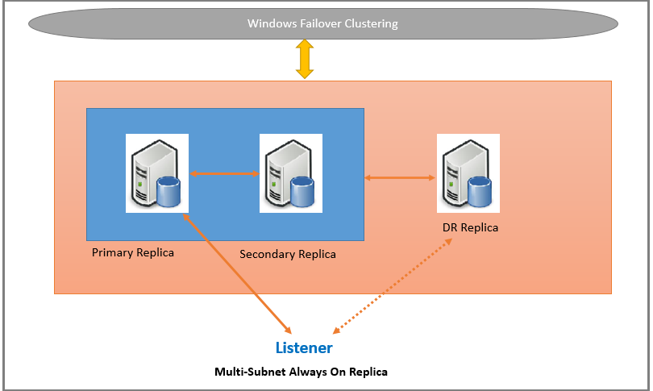

Overview
- Introduced in SQL Server 2012.
- An HA and DR solution that provides an enterprise-level alternative (enhanced) to database mirroring.
- Allows a set of user databases to failover automatically between different instances installed on separate servers.
- Applications that use these databases are automatically redirected; this minimizes the application downtime.
- If a secondary replica becomes disconnected from the primary, or if there is a quorum loss and the secondary setup must be readable, it will remain available for read-only connections during the disconnection.
- Each AG defines a set of two or more failover partners known as availability replicas. Failovers are not caused by database issues such as a database becoming suspect due to a loss of a data file, deletion of a database, or corruption of a transaction log.
- A read-scale AG is a group of databases that are copied to other instances of SQL Server for read-only workload.
- New in SQL Server 2014:
- Limit of replicas has increased from 4 to 8 replicas.
- Gives the ability to have a replica hosted in Microsoft Azure.
- New in SQL Server 2016:
- Automatic Seeding via SSMS version 17 or later.
- An AG can temporarily straddle two clusters while being migrated to different cluster. This introduces distributed AGs. In a distributed AG, two AGs reside on different clusters.
- New in SQL Server 2017:
- Introduces 2 different architectures for AGs. AGs provide HA, DR, and read-scale balancing. These AGs require a cluster manager. In Windows, failover clustering provides the cluster manager. In Linux, you can use Pacemaker. The other architecture is a read-scale AG. A read scale AG provides replicas for read-only workloads but not HA. In a read-scale AG there is no cluster manager. In an HA configuration, a cluster role is created for every AG that you create. The WSFC cluster monitors this role to evaluate the health of the primary replica. The quorum for Always On AGs is based on all nodes in the WSFC cluster regardless of whether a given cluster node hosts any availability replicas.
- New in SQL Server 2019:
- SQL Server 2019 increases the maximum number of synchronous replicas from 3 to 5. You can configure this group of five replicas to have automatic failover within the group. There is one primary replica, plus four synchronous secondary replicas.
- Other features
- Supports alternative availability modes.
- Supports several forms of AG failover.
- Supports an AG listener for each AG.
- Supports a flexible failover policy for greater control over AG failover.
- Supports encryption and compression, which provide a secure, high performing transport.
- Provides an integrated set of tools to simplify deployment and management of AGs.
Availability Replicas
A given instance can host only one availability replica per AG. However, each instance can be used for many AGs. A given instance can be either a stand-alone instance or a SQL Server FCI.
- Primary Replica - Read-write connections.
- Secondary Replica - Read-only copy and serves as a potential failover targets for the AG.
When the role of an availability replica is indeterminate, such as during a failover, its databases are temporarily in a NOT SYNCHRONIZING state. Their role is set to RESOLVING until the role of the availability replica has resolved.
Availability Databases
When you add a database, it joins the AG as a primary database, while remaining available to clients.
Data Synchronization
It occurs between the primary database and each connected secondary database, independently of the other databases. Therefore, a secondary database can be suspended or fail without affecting other secondary databases, and a primary database can be suspended or fail without affecting other primary databases.
Primary replica sends transaction log records from each primary database to every secondary replica. Every secondary replica caches the transaction log records and then applies them to its corresponding secondary database (harden the log).
Commit Modes
The availability mode is a property of each availability replica. It determines whether the primary replica waits to commit transactions on a database until a given secondary replica has written the transaction log records to disk (hardened the log).
| Asynchronous-commit * | Synchronous-commit | Configuration only | |
| Performance vs. Protection | Performance is more important than protecting against data loss. Allows them to lag behind the primary databases, making some data loss possible. Typically the gap between an asynchronous-commit secondary database and the corresponding primary database is small. But the gap can become substantial if the server hosting the secondary replica is over loaded or the network is slow. | Protecting the data is more important. | |
| Data Flow | Primary replica commits transactions without waiting for acknowledgement that an asynchronous-commit secondary replica has hardened the log. | Before committing transactions, a synchronous-commit primary replica waits for a synchronous-commit secondary replica to acknowledge that it has finished hardening the log. | |
| Latency | Minimal transaction latency on the secondary databases. | At the cost of increased transaction latency, this ensures that once a given secondary database is synchronized with the primary database, committed transactions are fully protected. | Applies to AGs that are not on a WSFC. A replica in configuration only mode does not contain user data. The replica master database stores AG configuration metadata. |
Factors That Disrupt Data Synchronization
Once all of its databases are synchronized, a secondary replica enters the HEALTHY state. The synchronized secondary replica will remain healthy unless one of the following occurs:
- A network or computer delay or glitch causes the session between the secondary replica and primary replica to timeout.
- Suspending a secondary database on the secondary replica. The secondary replica ceases to be synchronized, and its synchronization-health state is marked as NOT_HEALTHY. the secondary replica cannot become healthy again until the suspended secondary database is either resumed and resynchronized or removed from the AG.
- You add a new primary database on the AG. Previously synchronized secondary replicas enter the NOT_HEALTHY synchronization-health state. This state indicates that at least one database is in the NOT SYNCHRONIZING synchronization state. A given secondary replica cannot be HEALTHY again until a corresponding secondary database has been prepared on the replica, has been joined to the AG, and has become synchronized with the new primary database.
-
You change the primary replica or the secondary replica to asynchronous-commit availability mode.
- After changing, the secondary replica will remain in the HEALTHY synchronization-health state as long as data synchronization continues.
- However, if only the primary replica is changed to asynchronous-commit mode, the synchronous-commit secondary replica will enter the PARTIALLY_HEALTHY synchronization-health state. This state indicates that at least one database is in the SYNCHRONIZING synchronization state, but none of the databases are in the NOT SYNCHRONIZING state.
- You change any secondary replica to synchronous-commit availability mode. This causes that secondary replica to be marked as in the PARTIALLY_HEALTHY synchronization-health state until all of its databases are in the SYNCHRONIZED synchronization state.
How Synchronization Works on a Synchronous-Commit Secondary Replica
Synchronous operation is maintained in the following manner:
- On receiving a transaction from a client, the primary replica writes the log for the transaction to the transaction log and concurrently sends the log record to the secondary replicas.
- Once a log record is written to the transaction log of the primary database, the transaction can be undone only if there is a failover at this point to a secondary that did not receive the log. The primary replica waits for confirmation from the synchronous-commit secondary replica.
- The secondary replica hardens the log and returns an acknowledgement to the primary replica.
- On receiving the confirmation from the secondary replica, the primary replica finishes the commit processing and sends a confirmation message to the client.
The time required for synchronization depends on the following:
- Essentially on how far the secondary database was behind the primary database at the start of the session (measured by the number of log records initially received from the primary replica).
- The work load on the primary database.
- The speed of the computer of the server instance that hosts the secondary replica.
If a synchronous-commit secondary replica times out without confirming that it has hardened the log, the primary marks that secondary replica as failed. The connected state of the secondary replica changes to DISCONNECTED, and the primary replica stops waiting for confirmation from the secondary replica. This behavior ensures that a failed synchronous-commit secondary replica does not prevent hardening of the transaction log on the primary replica.
Data latency on secondary replica
Implementing read-only access to secondary replicas is useful if your read-only workloads can tolerate some data latency. In situations where data latency is unacceptable, consider running read-only workloads against the primary replica.
The primary replica sends log records of changes on primary database to the secondary replicas. On each secondary database, a dedicated redo thread applies the log records. On a read-access secondary database, a given data change does not appear in query results until the log record that contains the change has been applied to the secondary database and the transaction has been committed on primary database.
This means that there is some latency, usually only a matter of seconds, between the primary and secondary replicas. In unusual cases, however, for example if network issues reduce throughput, latency can become significant. Latency increases when I/O bottlenecks occur and when data movement is suspended.
Failover Types
| Automatic (Synchronous) | Occurs in response to a failure that causes a synchronized secondary replica to transition to the primary role (with guaranteed data protection). When the former primary replica becomes available, it transitions to the secondary role. FCIs do not support automatic failover by AGs. Only a setup of "Automatic" Failover Type on both the primary and secondary replicas, are supported for automatic failover. |
| Planned Manual (Synchronous) | Occurs after a DBA issues a failover command and causes a synchronized secondary replica to transition to the primary role (with guaranteed data protection) and the primary replica to transition to the secondary role. Requires that both the primary replica and the target secondary replica are running under synchronous-commit mode, and the secondary replica must already be synchronized. |
| Forced Manual (Asynchronous) | Forcing a failover (with possible data loss) is a disaster recovery method that allows you to use a secondary replica as a warm standby server. Because forcing failover risks possible data loss, it should be used cautiously and sparingly. |
AG Listener
- To allow your clients to be redirected automatically in the event of a failover. Think of it as a DNS entry that points to the primary replica. In the event of a failover, the WSFC updates the DNS entry to point at the correct primary replica.
- A server name to which clients can connect in order to access a database in a primary or a read-only secondary replica of an Always On AG.
- Associated with a unique DNS name that serves as a VNN, one or more VIPs, and a TCP port number.
- If an AG possesses only two availability replicas and is not configured to allow read-access to the secondary replica, clients can connect to the primary replica by using a database mirroring connection string. This approach can be useful temporarily after you migrate a database from database mirroring to Always On AGs.
Active Secondary Replicas
Performing backup operations on secondary replicas
- BACKUP DATABASE supports only copy-only full backups of databases, files, or filegroups when it's executed on secondary replicas (differential backups aren't supported on secondary replicas). Copy-only backups don't impact the log chain or clear the differential bitmap.
- Concurrent backups, such as executing a transaction log backup on the primary replica while a full database backup is executing on the secondary replica, is currently not supported.
- BACKUP LOG supports only regular log backups (the COPY_ONLY option is not supported for log backups on secondary replicas). A consistent log chain is ensured across log backups taken on any of the replicas (primary or secondary), irrespective of their availability mode (synchronous-commit or asynchronous-commit).
- To back up a secondary database, a secondary replica must be able to communicate with the primary replica and must be SYNCHRONIZED or SYNCHRONIZING.
- Backup preference is not enforced by SQL Server, so it has no impact on ad-hoc backups.
Read-only access to one or more secondary rCeplicas (readable secondary replicas)
Any secondary availability replica can be configured to allow only read-only access to its local databases, though some operations are not fully supported. This will prevent read-write connection attempts to the secondary replica. It is also possible to prevent read-only workloads on the primary replica by only allowing read-write access. This will prevent read-only connections from being made to the primary replica.
This means that you can then offload your database's reporting requirement to the secondary database. With read-only routing, you can ensure that the client connections that specify a read intent connection get automatically directed to a readable secondary. You will need to have configured an AG listener to achieve this automatic redirection.
Session-Timeout Period
A property that determines how long connection with another availability replica can remain inactive before the connection is closed. The primary and secondary replicas ping each other to signal that they are still active. Receiving a ping from the other replica during the timeout period indicates that the connection is still open and that the server instances are communicating. On receiving a ping, an availability replica resets its session-timeout counter on that connection.
This period prevents either replica from waiting indefinitely to receive a ping from the other replica. If no ping is received from the other replica within the session-timeout period, the replica times out. Its connection is closed, and the timed-out replica enters the DISCONNECTED state. Even if a disconnected replica is configured for synchronous-commit mode, transactions will not wait for that replica to reconnect and resynchronize.
The default session-timeout period for each availability replica is 10 seconds. This value is user-configurable, with a minimum of 5 seconds. Generally, we recommend that you keep the time-out period at 10 seconds or greater. Setting the value to less than 10 seconds creates the possibility of a heavily loaded system declaring a false failure.
In the resolving role, the session-timeout period does not apply because pinging does not occur.
Automatic Page Repair
Each availability replica tries to automatically recover from corrupted pages on a local database by resolving certain types of errors that prevent reading a data page. If a secondary replica cannot read a page, the replica requests a fresh copy of the page from the primary replica. If the primary replica cannot read a page, the replica broadcasts a request for a fresh copy to all the secondary replicas and gets the page from the first to respond. If this request succeeds, the unreadable page is replaced by the copy, which usually resolves the error.
Thread Usage
- On an idle instance of SQL Server, AG uses 0 thread.
- The maximum number of threads used by AGs is the configured setting for the maximum number of server threads ('max worker threads') minus 40.
- The availability replicas hosted on a given server instance share a single thread pool. Threads are shared on an on-demand basis, as follows:
- Typically, there are 3-10 shared threads, but this number can increase depending on the primary replica workload.
- If a given thread is idle for a while, it is released back into the general SQL Server thread pool. Normally, an inactive thread is released after ~15 seconds of inactivity. However, depending on the last activity, an idle thread might be retained longer.
- A SQL Server instance uses up to 100 threads for parallel redo for secondary replicas. Each database uses up to 1/2 of the total number of CPU cores, but not more than 16 threads per database. If the total number of required threads for a single instance exceeds 100, SQL Server uses a single redo thread for every remaining database. Serial Redo threads are released after ~15 seconds of inactivity.
- In addition, AGs use unshared threads, as follows:
- Each primary replica uses 1 Log Capture thread for each primary database. In addition, it uses 1 Log Send thread for each secondary database. Log send threads are released after ~15 seconds of inactivity.
- A backup on a secondary replica holds a thread on the primary replica for the duration of the backup operation.
Interoperability
The following features interoperate with Always On AGs with specific restrictions.
- Cross-database transactions/distributed transactions.
- AGs does not interoperate with Database Mirroring.